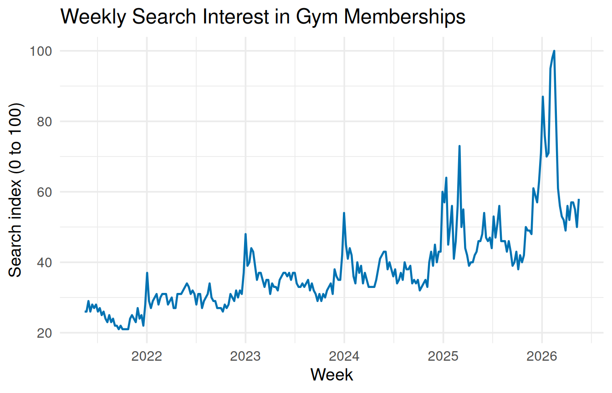
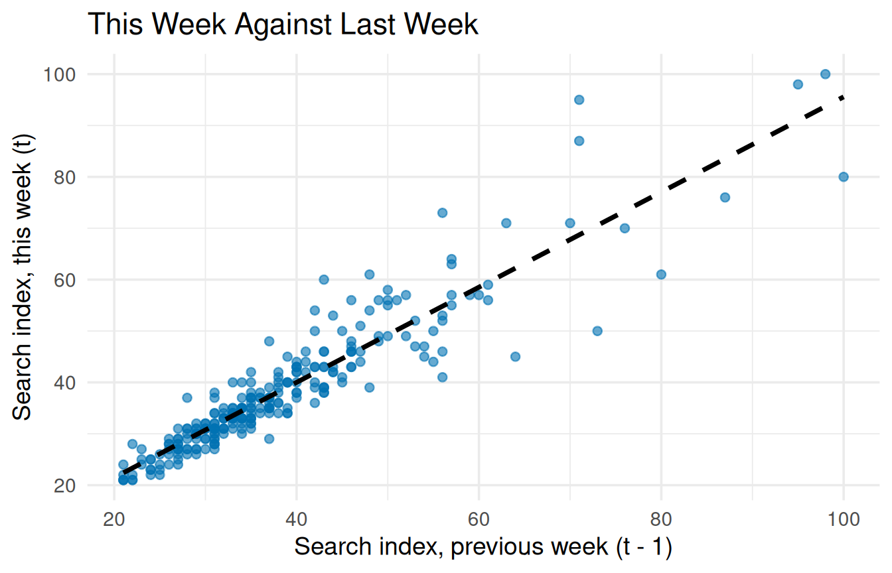
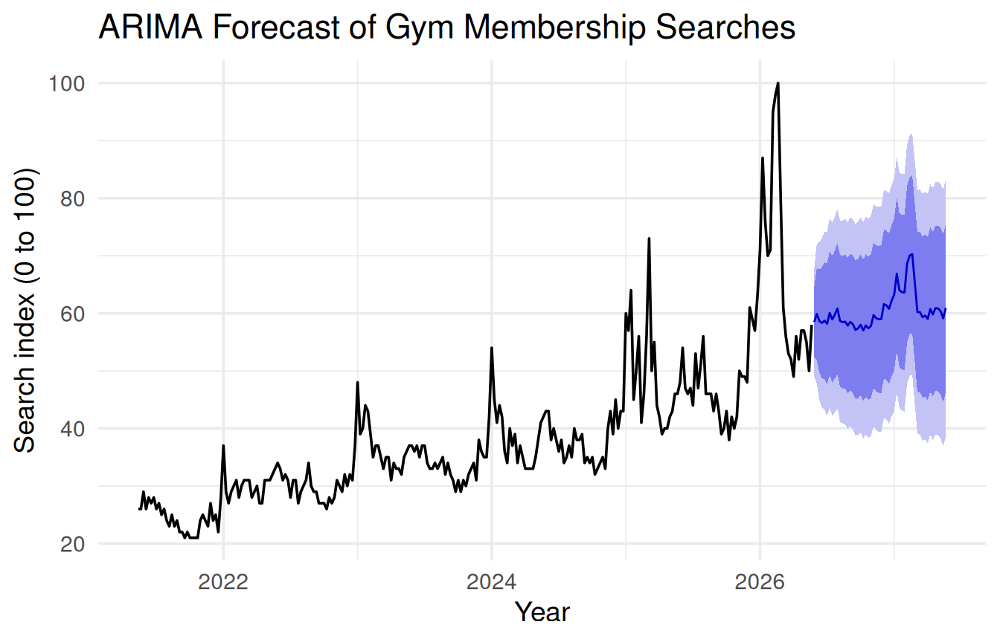

# ggplot2 draws the graphs; forecast fits the ARIMA model and
# makes the forecast.
library(ggplot2)
library(forecast)12 Time Series Analysis
This chapter reproduces the time series analysis from Chapter 12 of the textbook: a time series line plot, the lag-1 autocorrelation with its scatterplot, and an ARIMA forecast. It uses the textbook’s own example, so you can check every value against the chapter.
Get the script: Download the Chapter 12 script, chapter_12.R, and save it in the same folder as your data.
12.1 The data
Download gym_membership_searches.csv into the same folder as the script. It holds 262 weeks of U.S. Google search interest in “gym membership,” from May 2021 to May 2026.
The variables used in this chapter:
| Variable | Type | What it records |
|---|---|---|
Week |
Categorical | The starting date for the week of data collection, recorded in MM-DD-YY format (ranging from 05-16-21 to 05-17-26). |
gym membership |
Numerical | The normalized search interest index for the phrase “gym membership.” Google scales these values from 0 to 100, where 100 represents the absolute peak search volume during the five-year window, and other values represent a percentage of that peak. |
12.2 Load the packages and the data
This chapter uses ggplot2 for the graphs and forecast for the ARIMA model. If either is not installed yet, go back to Install and load packages in Getting Set Up.
# CHANGE THIS: the file name of your dataset, inside the quotes.
gym <- read.csv("gym_membership_searches.csv")
names(gym)[1] "Week" "gym.membership"head(gym) Week gym.membership
1 05-16-21 26
2 05-23-21 26
3 05-30-21 29
4 06-06-21 26
5 06-13-21 28
6 06-20-21 27
NoteColumn names with spaces
The file calls the second column gym membership, with a space, but names() shows gym.membership. read.csv() replaces spaces (and other characters R cannot use in a name) with dots, so use the dotted name in your code. Always check names() after reading a file.
12.2.1 Turn the text into dates
head() shows that Week holds text such as 05-16-21. Turn it into real dates, so R puts the weeks in time order. The format describes how the dates are written: %m is the month, %d the day, and %y a two-digit year, joined by dashes as in the file.
# Turn the dates from text into real dates, so R puts them in
# time order on a graph.
# format = "%m-%d-%y" describes how the dates are written:
# month-day-year, with a two-digit year (05-16-21).
# Use "%Y" for a four-digit year (05-16-2021), and change
# the - to / if your dates use slashes (05/16/21).
# CHANGE THIS: your date column (in both places) and its format
gym$Week <- as.Date(gym$Week, format = "%m-%d-%y")
head(gym) Week gym.membership
1 2021-05-16 26
2 2021-05-23 26
3 2021-05-30 29
4 2021-06-06 26
5 2021-06-13 28
6 2021-06-20 27R now prints the dates year first (2021-05-16), which is how R always displays dates.
WarningCommon error: every date turns into NA
What you see
wrong <- read.csv("gym_membership_searches.csv")
head(as.Date(wrong$Week, format = "%m/%d/%y"))[1] NA NA NA NA NA NAWhat it means: this format uses slashes, but the dates in the file use dashes, so R cannot read any of them. R gives no error or warning, just NA.
How to fix it: look at a few dates with head() and copy their exact pattern into format: the order of month, day, and year; dashes or slashes; and %y for a two-digit year or %Y for a four-digit year.
12.3 Time series line plot
Time goes along the bottom, and geom_line() joins the weeks in order:
# 1. TIME SERIES LINE PLOT: time along the bottom, the measurement
# up the side. geom_line() joins the points in time order.
# CHANGE THIS: your date column, your measurement, and your labels
ggplot(gym, aes(x = Week, y = gym.membership)) +
geom_line(color = "#0072B2", linewidth = 0.8) +
labs(title = "Weekly Search Interest in Gym Memberships",
x = "Week",
y = "Search index (0 to 100)") +
theme_minimal(base_size = 14)
The plot shows the two patterns the textbook describes: a spike every winter and a slow upward trend across the five years.
TipWith your own data
Change the date column and the measurement in aes(), and update the labels. If your time column holds years or week numbers (plain numbers) instead of dates, skip the as.Date() step.
12.4 Lag-1 autocorrelation
To compare each week with the week before, create a lag-1 column: a copy of the measurement shifted down one row, so each row also holds the previous week’s value.
# 2. THE LAG-1 VARIABLE: each row gets the PREVIOUS row's value.
# gym$gym.membership[-nrow(gym)] is every value except the
# last one (nrow() counts the rows; the minus sign drops
# that row).
# c(NA, ...) puts an empty value at the start, since the first
# week has no week before it.
# CHANGE THIS: your dataset (in all three places) and your
# measurement
gym$lag_1 <- c(NA, gym$gym.membership[-nrow(gym)])
head(gym) Week gym.membership lag_1
1 2021-05-16 26 NA
2 2021-05-23 26 26
3 2021-05-30 29 26
4 2021-06-06 26 29
5 2021-06-13 28 26
6 2021-06-20 27 28Read across a row: in row 3 (May 30), the search index was 29, and lag_1 holds 26, the value from the week before. The first row has NA in lag_1, because no week came before it. Then the correlation between the two columns:
# The lag-1 autocorrelation: the correlation between each week
# and the week before.
# use = "complete.obs" skips the first row, which has no
# previous week. Leave it as is.
# CHANGE THIS: your measurement and your lag column
cor(gym$gym.membership, gym$lag_1, use = "complete.obs")[1] 0.9237756The lag-1 autocorrelation is \(r = 0.92\), the same value as in the textbook: each week’s search interest is very close to the previous week’s.
# The lag-1 scatterplot: last week along the bottom, this week up
# the side, with a straight line, as in Chapter 4.
# na.rm = TRUE in both layers skips the first row quietly.
# CHANGE THIS: your lag column, your measurement, and your labels
ggplot(gym, aes(x = lag_1, y = gym.membership)) +
geom_point(color = "#0072B2", alpha = 0.6, na.rm = TRUE) +
geom_smooth(method = "lm", formula = y ~ x, se = FALSE,
color = "black", linetype = "dashed",
na.rm = TRUE) +
labs(title = "This Week Against Last Week",
x = "Search index, previous week (t - 1)",
y = "Search index, this week (t)") +
theme_minimal(base_size = 14)
The points form a tight band around the line: strong momentum from one week to the next.
TipWith your own data
Change the dataset name in all three places on the lag_1 line, and your measurement. The rest of the code then works as it is, with your measurement’s name in cor() and the plot.
12.5 ARIMA forecast
First, turn the measurement into a time series with ts(), which needs to know how many measurements there are per year and when the series starts. The first week in the data, May 16, 2021, is the 20th week of 2021:
# 3. ARIMA FORECAST.
# ts() turns the measurement into a time series.
# frequency = 52 is the number of measurements per year (52
# for weekly data, 12 for monthly, 4 for quarterly).
# start = c(2021, 20) is when the series starts: the year, then
# which measurement of that year (here, the 20th week).
# CHANGE THIS: your measurement, frequency, and start
gym_ts <- ts(gym$gym.membership, frequency = 52,
start = c(2021, 20))auto.arima() from the forecast package tries many ARIMA models and keeps the one that fits best:
# auto.arima() tries many ARIMA models and keeps the best one.
# CHANGE THIS: your time series' name, and a name for the model
gym_model <- auto.arima(gym_ts)
gym_modelSeries: gym_ts
ARIMA(1,1,1)(0,0,1)[52]
Coefficients:
ar1 ma1 sma1
0.7707 -0.9479 0.2233
s.e. 0.0546 0.0246 0.0730
sigma^2 = 22.83: log likelihood = -778.64
AIC=1565.28 AICc=1565.44 BIC=1579.54The selected model is ARIMA(1,1,1)(0,0,1)[52], the one the textbook reports: an ARIMA(1,1,1) with a seasonal term that repeats every 52 weeks. You do not need to interpret the coefficients; the forecast is what you use.
# forecast() projects the model forward.
# h = 52 is how many measurements ahead to forecast (52 weeks,
# or one year, here).
# CHANGE THIS: your model's name and how far ahead to forecast
gym_forecast <- forecast(gym_model, h = 52)
# The highest forecast value.
max(gym_forecast$mean)[1] 70.2834The highest forecast value is 70.3, the winter peak the textbook describes, below the 2026 record of 100.
# The forecast plot: the data, then the forecast line with its
# 80% and 95% prediction intervals shaded around it.
# CHANGE THIS: your forecast's name and your labels
autoplot(gym_forecast) +
labs(title = "ARIMA Forecast of Gym Membership Searches",
x = "Year",
y = "Search index (0 to 100)") +
theme_minimal(base_size = 14)
The forecast continues past the last week of data. The darker band is the 80% prediction interval and the lighter band the 95% interval; both widen the further ahead the forecast goes, as the textbook explains.
TipWith your own data
In ts(), set frequency to the number of measurements per year (12 for monthly data) and start to your first year and the position of your first measurement in that year (for monthly data starting in March 2018, c(2018, 3)). Then set h to how many measurements ahead you want to forecast, such as 12 for one year of monthly data.